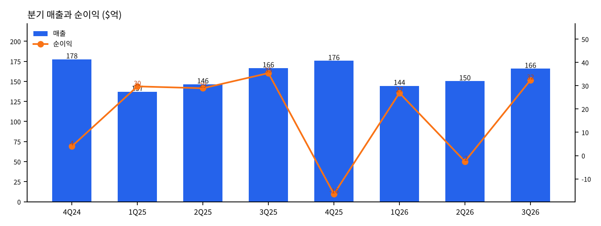
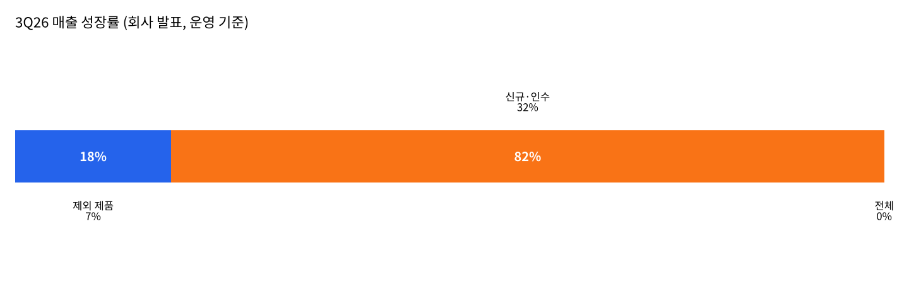
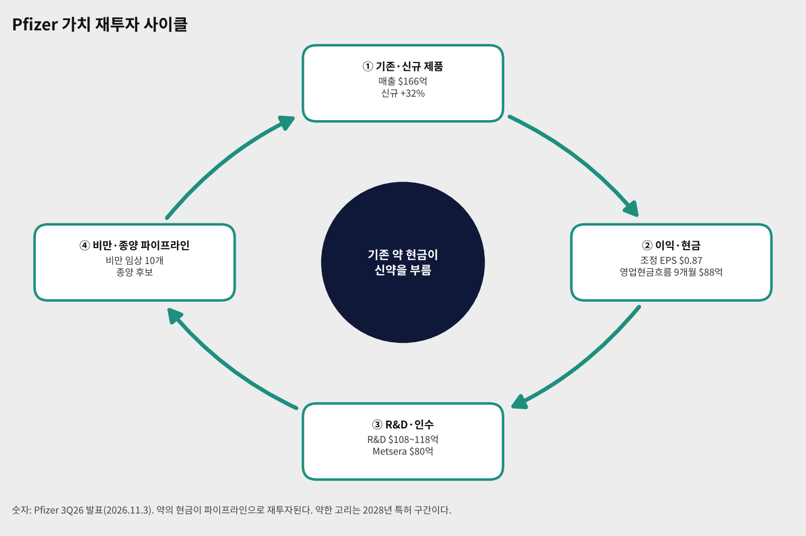

Pfizer는 처방 의약품과 백신을 팔고 그 이익으로 신약을 개발·인수한다. 특허 만료 전에 후속 신약을 확보하는 것이 핵심이다.
| 항목 | 내용 |
|---|---|
| 종목 | Pfizer (PFE) · NYSE · 헬스케어(제약) · 뉴욕 |
| 최근 분기(3Q26) | 매출 $166억, 조정 EPS $0.87 |
| 핵심 분야 | 종양, 면역, 내과, 백신, 비만(개발) |
| 직원 수 | 약 75,000명(트레이딩뷰) |
| 멀티플 | PER·PEG·P/S는 08~10 항목 표 참조 |
| 직책 | 인물 | 역할·특징 |
|---|---|---|
| 회장·CEO | 앨버트 불라(Albert Bourla) | 2026년 가이던스를 상향 |
| CFO | 세실 기에건(Cecile Guegan) | 2026.11.1부터 신임 CFO |
경영 스타일: 인수로 파이프라인 보강. 특허 만료 구간을 인수와 비용 절감으로 메우는 방식이다.
Metsera 인수로 비만 후보를 확보했고 Padcev·Elrexfio 등 종양 제품을 키운다.
2029년까지 누적 $97억 비용 절감을 목표로 한다.
다음 실적발표는 세 가지 질문에 답하는 자리다.
1. 신규·인수 제품이 특허 만료를 메우나?
2. 비만 임상이 진척되나?
3. FY26 가이던스를 지키나?
한 줄 판정 규칙: 첫 질문(신규 제품이 만료를 메우는지)이 확인되면 약한 고리(2028년 특허 구간)가 풀린다.
일정: 4Q26 실적은 2027.02.02 발표 예정이다.
| 분기 | 매출 | 순이익 | EPS | 조정 EPS | 특이 사항 |
|---|---|---|---|---|---|
| 4Q24 | $177.6억 | $4.0억 | 0.07 | 0.63 | |
| 1Q25 | $137.2억 | $29.7억 | 0.52 | 0.92 | |
| 2Q25 | $146.5억 | $28.9억 | 0.51 | 0.78 | |
| 3Q25 | $166.5억 | $35.4억 | 0.62 | 0.87 | |
| 4Q25 | $175.6억 | $-16.5억 | -0.29 | 0.66 | |
| 1Q26 | $144.5억 | $26.9억 | 0.47 | 0.75 | |
| 2Q26 | $150.3억 | $-2.5억 | -0.04 | 0.77 | |
| 3Q26 | $165.8억 | $32.4억 | 0.56 | 0.87 | FY26 가이던스 상향 |
매출은 트레이딩뷰 스캐너의 분기 총매출이라 회사가 발표한 순매출과 다를 수 있다. 매출·순이익·EPS(GAAP 희석)는 트레이딩뷰 스캐너, 조정 EPS는 트레이딩뷰 실적 페이지의 Reported 값이다. 분기 정렬은 오래된 분기→최신이다.

흐름 요약: 최근 분기 매출은 $165.8억로 전년 동기 $166.5억 대비 -0.4%, 순이익은 $32.4억(전년 $35.4억)다. 최근 4분기 GAAP EPS는 $0.70, 조정 EPS는 $3.05다.
| 구분 | 내용 | 3Q26 성장 | 비고 |
|---|---|---|---|
| 코미나티·팍슬로비드 제외 | 기존 제품 전체 | +7% | |
| 신규·인수 제품 | Padcev, Nurtec 등 | +32% | |
| 전체 | 총 매출 $166억 | 0% | 운영 기준 |

제품별 금액은 이 보고서에 수집하지 않아 성장률로 비교했다. 코로나 관련 제품이 줄면서 전체는 보합이다.
Pfizer는 환자의 삶을 바꾸는 약을 개발해 공급하는 것을 목표로 한다.
| 축 | 내용 |
|---|---|
| 제품 | 종양·면역·내과·백신 |
| R&D | FY26 $108~118억 |
| 인수 | Metsera $80억 |

| 이동평균 | 값 | 종가 대비 | 위치 |
|---|---|---|---|
| 5일선 | $28.62 | -2.0% | 종가 아래 |
| 20일선 | $29.59 | -5.2% | 종가 아래 |
| 50일선 | $28.83 | -2.7% | 종가 아래 |
| 100일선 | $27.47 | +2.1% | 종가 위 |
| 200일선 | $27.02 | +3.9% | 종가 위 |
52주 고가 $31.44(2026-11-05)·저가 $23.62(2026-06-25) 범위에서 종가 $28.06는 100일선, 200일선을 웃돌고 5일선, 20일선, 50일선은 밑돈다.
| 규칙 | 기준 | 현재 값 | 신호 |
|---|---|---|---|
| 장기 추세 필터 | 종가 vs 200일선 | $28.06 > $27.02 | 매수 |
| 중장기 교차 | 50일선 vs 200일선 | $28.83 > $27.02 | 매수 |
| 단기 교차 | 20일선 vs 50일선 | $29.59 > $28.83 | 매수 |
| 돈키언 채널 | 55일 고가 $31.44 / 저가 $27.12 | 중간값 $29.28 아래 | 매도 |
| 1개월 모멘텀 | 21거래일 수익률 | -6.8% (기준 $30.11) | 매도 |
| 3개월 모멘텀 | 63거래일 수익률 | +1.0% (기준 $27.79) | 매수 |
| 6개월 모멘텀 | 126거래일 수익률 | +8.8% (기준 $25.79) | 매수 |
| 12개월 모멘텀 | 252거래일 수익률 | +11.9% (기준 $25.08) | 매수 |
| 종합 (8개 평균) | +0.50 | 매수 |
해석: 매수 신호 6개(장기 추세 필터, 중장기 교차, 단기 교차, 3개월 모멘텀, 6개월 모멘텀, 12개월 모멘텀), 매도 신호 2개(돈키언 채널, 1개월 모멘텀). CTA 점수 +0.50(매수). 14일 ATR $0.79 (2.8%), 52주 고가 $31.44 · 저가 $23.62.
| 가격 | 기준 | 무엇이 바뀌나 |
|---|---|---|
| $31.44 | 55일 고가 | 돌파 시 채널 상단 갱신 |
| $30.11 | 1개월 모멘텀 기준가 | 종가가 이 가격 위면 1개월 신호 매수 |
| $29.28 | 돈키언 중간값 | 55일 채널 중간값 위/아래로 신호가 바뀜 |
| $27.79 | 3개월 모멘텀 기준가 | 종가가 이 가격 위면 3개월 신호 매수 |
| $27.12 | 55일 저가 | 이탈 시 채널 하단 갱신 |
| $27.02 | 200일선 | 종가가 이 선 위/아래인지로 장기 추세 신호가 바뀜 |
| $25.79 | 6개월 모멘텀 기준가 | 종가가 이 가격 위면 6개월 신호 매수 |
| $25.08 | 12개월 모멘텀 기준가 | 종가가 이 가격 위면 12개월 신호 매수 |
가격 수준은 신호가 바뀌는 기준선일 뿐 진입·청산 가격 제안이 아니다. 20일/50일 교차는 이동평균 자체가 움직여 단일 가격으로 표시하지 않았다. 일봉·주봉은 종가 기준 직접 계산(고저 데이터 미사용)이다.
| 악재 요인 | 내용 | 강도 |
|---|---|---|
| 특허 만료 | 2028년까지 미국 특허 노출 매출 $227억 | 높음 |
| 코로나 제품 감소 | 코미나티·팍슬로비드 감소로 전체 매출 보합 | 중간 |
| 파이프라인 위험 | 비만 임상 10개 결과 불확실 | 중간 |
| 티커 | 회사 | PER(TTM) | PEG | P/S | EPS 성장(YoY) |
|---|---|---|---|---|---|
| PFE | Pfizer | 9.2배 | – | 2.51배 | -5% |
| MRK | Merck | 140.7배 | – | 5.28배 | -87% |
| JNJ | Johnson & Johnson | 41.4배 | – | 6.87배 | -36% |
| BMY | Bristol-Myers Squibb | 13.2배 | 0.26 | 2.52배 | +52% |
| AMGN | Amgen | 25.7배 | 0.80 | 6.41배 | +33% |
비교 결론: Pfizer의 PER 9.2배는 Merck·Johnson & Johnson·Bristol-Myers Squibb·Amgen보다 낮다. 조정 EPS가 줄어 PEG는 산출되지 않는다.
현금·부채는 트레이딩뷰 스캐너 값이다. 인수로 부채가 늘었다.
| 지표 | 값 | 출처 | 해석 |
|---|---|---|---|
| 현금·단기투자 | $143억 | 트레이딩뷰 스캐너(최근 분기) | |
| 총부채 | $627억 | 트레이딩뷰 스캐너(최근 분기) | |
| 순부채(부채−현금) | $484억 | 내 계산 | 현금 대비 부채 부담 |
| 잉여현금흐름(TTM) | $118억 | 트레이딩뷰 스캐너 | |
| TTM 매출 | $636억 | 트레이딩뷰 스캐너 |
| 기준 | 매출 | P/S | 비고 |
|---|---|---|---|
| 내 계산(종가 ÷ 최근 4분기 매출 합계) | $636.2억 | 2.51배 | 시총은 정렬용 데이터에서만 사용 |
| 동종(트레이딩뷰) | – | MRK 5.28배 · JNJ 6.87배 · BMY 2.52배 · AMGN 6.41배 | 11.19 |
해석: 레버리지 2.6배, 영업현금흐름 9개월 $88억으로 이자와 배당을 낸다(회사 발표).
EBITDA는 영업활동의 현금 창출력을 보는 지표이고, PEG는 PER을 EPS 성장률로 나눈 값이다. EBITDA·FCF는 트레이딩뷰 TTM 값이다.
| 지표 | 값 | 산출 |
|---|---|---|
| EBITDA(TTM) | $230억 | 트레이딩뷰 스캐너 |
| EBITDA 마진 | 36.2% | EBITDA ÷ TTM 매출(내 계산) |
| FCF 마진 | 18.6% | FCF ÷ TTM 매출(내 계산) |
| PER(GAAP TTM) | 40.1배 | $28.06 ÷ $0.70 |
| PER(조정 TTM) | 9.2배 | $28.06 ÷ $3.05 |
| 방식 | PER | EPS 성장률 | PEG | 판정 |
|---|---|---|---|---|
| 조정 EPS (TTM $3.05) | 9.2배 | -5% ($3.20 → $3.05) | 산출 불가 | 참고 |
| GAAP EPS (TTM $0.70) | 40.1배 | -59% ($1.72 → $0.70) | 산출 불가 | 참고 |
판정: 조정 EPS 기준 PEG 산출 불가(EPS 성장 -5% 또는 음수) PEG 기준은 1.0 이하 투자 적격, 0.5 이하 적극 매수다. EPS 성장률은 최근 4분기 EPS 합계를 직전 4분기 합계와 비교한 값(내 계산)이고, 일회성 항목이 있으면 조정 EPS 행을 함께 본다.

Pfizer의 사이클: 기존 약의 현금이 R&D·인수로 가서 신약을 만들고 신약이 다시 매출이 된다.
| 고리 | 현재 숫자·근거 |
|---|---|
| ① 기존·신규 제품 | 매출 $166억 · 신규·인수 제품 +32% |
| ② 이익·현금 | 조정 EPS $0.87 · 9개월 영업현금흐름 $88억 |
| ③ R&D·인수 | R&D $108~118억 · Metsera 인수 $80억 |
| ④ 비만·종양 파이프라인 | 2026년 비만 임상 10개 |
사이클의 특징: 약한 고리는 R&D·인수 이후 매출 전환이다(2028년 특허 구간). "(내 해석)"은 보고서 수치가 아닌 해석이다.